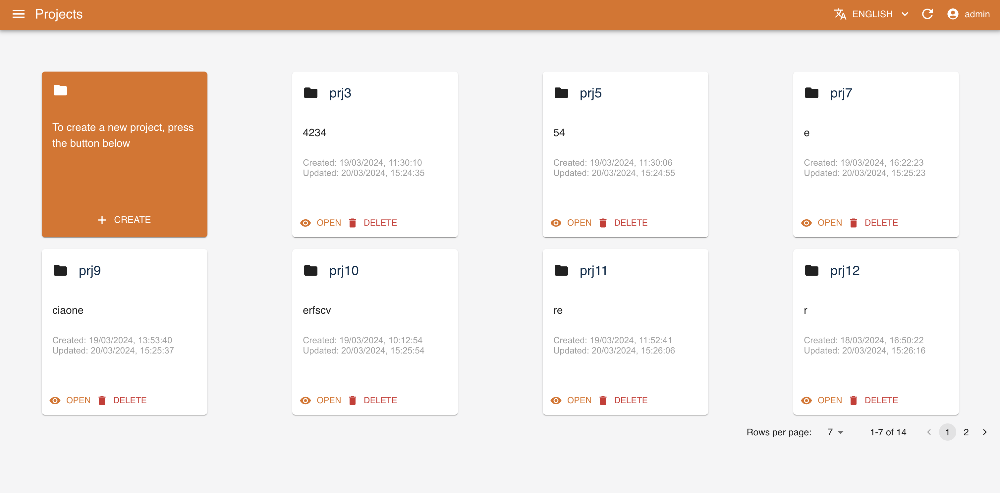
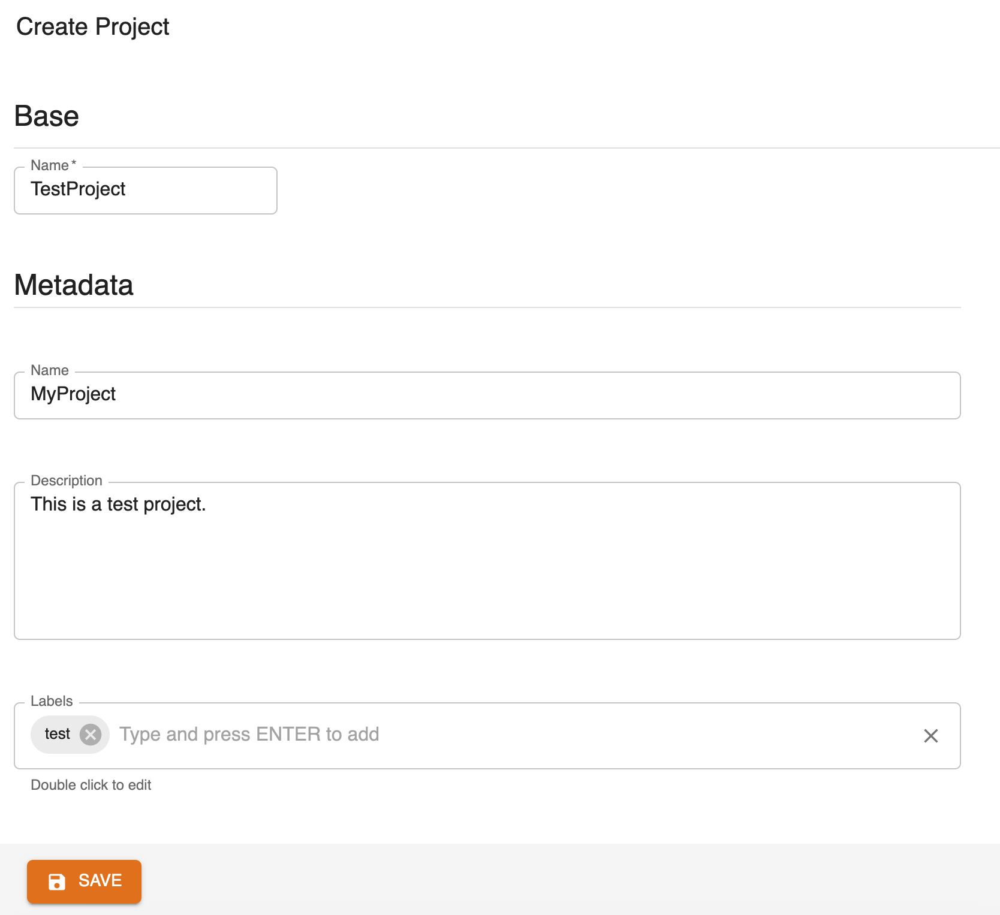
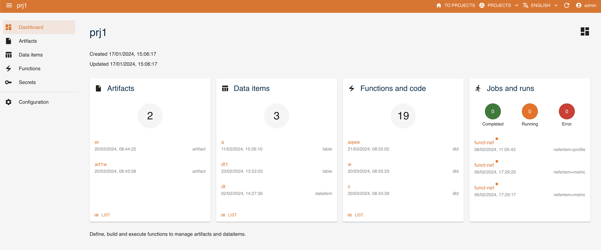

Digital Hub Console
The Digital Hub console is a front-end application backed by the Digital Hub Core API. It is a management interface to Core objects, namely:
- functions for all the configured runtimes (see the Runtimes documentation section for more information)
- dataitems
- artifacts
Such objects are project-scoped. When you access the console, you land to the project management page, where you can create or delete projects.
Create a Project
In order to create a new project, press the button on the first element of the list

Now you can fill the form with the data of your new project, adding Name, Description and its Metadata 
Following the selection of a project, you can get an overview of the associated objects on its dashboard and manage them on the dedicated pages.
Dashboard
The console dashboard shows the resources that have been created with a series of cards and allows you to quickly access them. In addition to the artifacts, data items and functions, the last card shows the runs present and their respective status 
Objects
Functions
Dataitems
Artifacts
Secrets
Versioning
Functions, dataitems and artifacts are versioned. When you visualize the details of an object, all of its versions are listed and browsable. Moreover, when you visualize a dataitem, its schema and data preview are available.
Running functions
The console can be used to create function runs. When you visualize a function, different operations are available depending on its kind (i.e., its runtime). For example, when you create a Nefertem function, you can then perform either validate, profile, infer or metric tasks providing the desired run configuration.
TODO screenshot Nefertem function